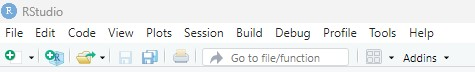
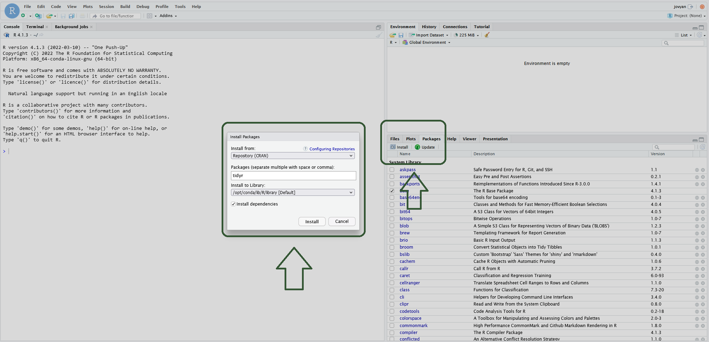
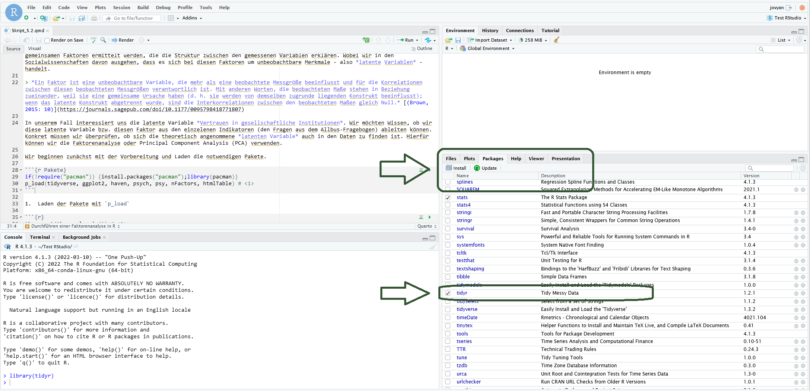

Einführung in R und RStudio

In diesem Kurs nutzen wir die Programmiersprache R sowie R-Studio als benutzerfreundliche Programmoberfläche. In diesem Kapitel gehen wir die wichtigsten Punkte Schritt für Schritt durch.
1 Was ist R?
R ist eine freie Programmiersprache die auf allen gängigen Betriebssystemen läuft. In seiner Grundfunktion ist R zunächst eine Konsole, in welcher wir zeilenweise Code eingeben und ausführen können. Dabei kann es sich um einfache Rechnungen oder auch komplexe Modelle handeln. Die meisten arbeiten dabei nicht mit R als solches sondern nutzen verschiedene Umgebungen, etwa RStudio oder Jupyter Hub um mit R zu arbeiten.
2 Was ist RStudio?
RStudio ist eine Erweiterung von R und bietete den Nutzer*innen eine benutzerfreundlichere Programmoberfläche. So ermöglicht RStudio einen direkten Überblick über die geladenen Pakete, Datensätze und im Arbeitsverzeichnis gespeicherten Dateien. Zudem ermöglicht RStudio die Arbeit mit Skripten, Markdown und Quarto Dokumenten.
3 Installation von R und RStudio
Möchtet ihr das Programm lokal auf eurem Rechner nutzen, müsst ihr zunächst die Programme R, RStudio und gegebenfalls RTools installieren. Alle Programme sind kostenlos online verfügbar und lassen sich auf allen gängigen Betriebssystemen installieren. Installiert zunächst R und anschließend RStudio und achtet darauf regelmäßig auf die aktuelle Version zu aktualisieren.
Innerhalb unseres Kurse arbeiten wir mit R und RStudio, nutzen die Programme allerdings in der Umgebung von Jupyter.
4 Die Programmoberfläche von RStudio
4.1 Schaltflächen
Innerhalb von RStudio unterscheiden wir 4 Schaltflächen welche sich beliebig via Drag and Drop verschieben oder auch minimieren lassen.

1 Ist der Bereich in welchen wir Skripte, Markdown und Quarto-Dokumente bearbeiten und ausführen können (siehe auch Markdown und Quarto)
2 Ist die Konsole. Dies ist der Bereich in welchem wir weiterhin oldschool R angezeigt bekommen. Dieser Bereich kann sehr hilfreich sein, wenn man kurz Befehle benötigt, welche nicht im Skript auftauchen sollen (beispielsweise eine kurze Hilfe zu Funktionen mittels ?)
3 In diesem Bereich findet sich alles zu den innerhalb von R geladenen Datensätzen. Unter Environment finden sich die Datensätze (Data), die Historie der genutzten Befehle (History), eine Schnittstelle zu Datenbanken (Connection) sowie R-interne Tutorials (Tutorial).
4 In diesem Bereich finden sich verschiedene Reiter, welche die Organisation der Arbeit mit R erleichtern. Unter File befinden sich alle innerhalb des Ordners oder Projektes befindlichen Dateien. Unter Plots kann man sich die in R erstellten Grafiken anzeigen lassen. Packages zeigt alle in R installierten Pakete an. Hier lassen sich mittels install auch neue Pakete installieren oder über update die aktuellen Pakete updaten. Bei Help können wir eine Hilfeseite aufrufen. Es kann wahlweise direkt innerhalb der Seite nach Hilfen gesucht werden oder mit dem Befehl ?Name der Funktion bzw. ??Name des Packages innerhalb der Konsole. Möchte man nach einem Befehl aus einem Paket suchen nutzt man den Suchbefehle?Name des Packages::Name der Funktion. Unter Viewer finden sich gerenderte Dokumente (beispielsweise ein gerendertes Markdown oder Quarto Dokument) und unter Presentation gerenderte Shiny-Dokumente.
4.2 Menüleiste
Zusätzlich zu den Schaltflächen findet sich oben links eine Menüleiste:

- Unter File können neue Dateien erstellt, geöffnet und gespeichert werden.
- Edit bietet Möglichkeiten der Dateibearbeitung (bspw. Kopieren, Ausschneiden, Rückgängig etc.) falls ihr keine Short-Cuts nutzen wollt.
- Code gibt eine Übersicht über Funktionen innerhalb des Markdown-Dokumentes (bspw. Codechunks einfügen).
- Unter View können die einzelnen Schaltflächen und deren Aufteilung geändert werden. Wahlweise geht dies auch via Drag & Drop.
- Plots vereinfacht den Umgang mit in r erstellten Grafiken. Wahlweise könnt ihr hier auch den Reiter Plots in Schaltfläche 4 nutzen.
- Session hier kann eine R-Session neu gestartet oder beendet werden (siehe auch 1.6 Die Session).
- Build, Debug und Profile beinhaltet Sonderanwendungen, wie beispielsweise das Debugging von Funktionen oder Fragen nach der Speed-Optimierung von R-Code.
- Tools hat viele hilfreiche Funktionen. Hier können unter anderem Pakete installiert und hilfreiche Keyboard Shortcuts ausgegeben werden. Am bedeutsamsten ist hier jedoch der Bereich Global Options, in welchem unter anderem grundlegende Einstellungen zum Speicherort von R und den Paketen, zur Aufteilung und Aussehen von RStudio und zur Funktionalität von R Markdown getroffen werden können.
- Auch der Reiter Help kann sehr hilfreich sein. Hier finden sich eine Hilfeseite (siehe auch Reiter Help in Schaltfläche 4), Möglichkeiten der besseren Zugänglichkeit (Accessibility), Cheat Sheets für die Arbeit mit R und erneut eine Übersicht über Shortcuts für die Arbeit mit R.
5 Die Grundlogik von R
Wie bereits zuvor erwähnt ist R eine Programmiersprache. Das bedeutet, dass alle Schritte in R, vom Datenmanagement bis zu komplizierteren statistischen Analysen, mit Befehlen bzw. Funktionen erfolgen. Grundsätzlich funktionieren Befehle so, dass zunächst der Befehl erfolgt und in Klammern anschließend worauf sich dieser Befehl bezieht.
Dabei können sich manche Befehle auf den gesamten Datensatz beziehen (etwa der Befehl str der die Struktur des Datensatzes anzeigt) oder auch jeweils nur auf einzelne Variablen (beispielsweise wenn wir den Mittelwert einer einzelnen Variablen des Datensatzes ermitteln wollen).
Für den Befehl str() sieht die Code-Zeile bei einem Datensatz names data wie folgt aus:
Für die Berechnung des Mittelwertes mit der Funktion mean() müssen wir R ebenfalls den Datensatz nennen, auf welchen wir uns beziehen wollen (💡 Fun-Fact, R “denkt nicht mit”, also auch wenn für euch klar ist, dass ihr doch die gesamte Zeit mit dem selben Datensatz arbeitet, muss R das immer wieder gesagt bekommen). Zusätzlich müssen wir die Variable angeben, von welcher der Mittelwert berechnet werden soll. Datensatz und Variable können wir dabei mit einem Dollarzeichen $ verbinden, dass sagt R, dass es sich um die Variable aus dem jeweiligen Datensatz handelt. Möchten wir nun den Mittelwert der Variablen Alter aus dem Datensatz data berechnen, sieht der Code wie folgt aus:
Dabei haben die meisten Funktionen noch weitere Zusatzoptionen, welche wir nutzen können. Bei dem Befehl mean können wir beispielsweise angeben, ob fehlende Werte in die Berechnung mit einfließen sollen oder nicht. Dies geschieht mit den Zusatz na.rm = TRUE bzw. na.rm = FALSE. Na.rm steht in diesem Fall für NA (=not available, fehlende Fälle) und remove (also entfernen), fragt demnach ob fehlende Fälle aus der Berechnung ausgeschlossen werden sollen. Dabei ist die default-Option, also die Option die in dem Befehl voreingestellt ist, dass fehlende Werte nicht aus der Berechnung ausgeschlossen werden (na.rm=F). Die meisten Befehle haben bestimmte defaults, da dies diese den Normalfall der Nutzung beschreiben und uns beim Programmieren Schreibaufwand ersparen (möchten wir die defaults nutzen, müssen wir immerhin nichts zusätzliches in der Funktion angeben). Allerdings können wir hier auch immer die anderen Optionen nutzen, wir müssen dies nur in unserem Befehl angeben:
Hier haben wir auch bereits eine weitere Funktionalität von R kennengelernt, nämlich die Operationalisierung einzelner Parameter über T (TRUE) und F (FALSE). Doch woher weiß ich nun als neuer Nutzer, welche Optionen mit bei einzelnen Befehlen zur Verfügung stehen?
Hier hilf ein Blick in die Hilfeseite, welche wir beispielsweise für den Mittelwert mit dem Befehl ?mean() aufrufen können. Für jede Funktion stehen - wie oben bereits erwähnt - Hilfeseiten zur Verfügung. Diese beinhalten zunächst eine kurze Beschreibung Description, anschließend einen Überblick zur Nutzung Usage sowie dem Default des Befehles. Anschließend finden sich die Arguments, dies sind die Möglichkeiten, wie wir die Funktion nutzen können und welche zusätzlichen Optionen zur Verfügung stehen. Oftmals finden sich zudem weitere Erklärungen und Beispiele der Nutzung.
5.1 Kurz-Exkurs: das tidyverse
In R selbst findet sich eine Vielzahl von Befehlen. Zusätzlich wird R von den Nutzern immer weiter entwickelt und es kommen neue Funktionen in Form von Paketen hinzu. Eines der meist genutzten Pakete(-universen) stellt dabei das tidyverse dar. Mit den Befehlen und Funktionen dieses Paketes kommt eine etwas andere Programmiersprache, welche uns jedoch die Arbeit mit R erleichtert. Gerade auch bei Fragen des Datenmanagementes ist das tidyverse hilfreich, denn hier kommt ein zweiter Fun-Fact über R:💡 R kann nicht nur manchmal etwas dumm sein (wir erinnern uns, es denkt nicht mit), es ist auch recht vergesslich. Wir haben oben bereits gelernt, dass wir in Befehlen immer den Datensatz und die Variable spezifizieren müssen. Dies stellt kein Problem bei einzelnen Befehlen dar, ist jedoch bei einer Vielzahl von Befehlen etwas nervig. Hier kommt uns die tidyverse Logik zu Nutze, in welcher einmal zu Beginn des Dokumentes der Datensatz spezifziert wird und anschließend alle weiteren Schritte durch eine Pipe %>% verbunden werden. Die Pipe (Shortcut Windows: Ctrl + Shift + M; MAC: Cmd + Shift + M) bedeutet so viel wie “und dann”. Also im Prinzip sagen wir R, nehme diesen Datensatz und dann mache die folgenden Dinge, wobei wir so viele Schritte wie wir möchten jeweils mit Pipes verbinden können. Wir nutzen in unseren Skripten hauptsächlich die tidyverse-Logik, erklären diese daher grundlegender in Kapitel 3.1, wenn wir uns mit den ersten Schritten des Datenmanagements beschäftigen.
6 Pakete
R-Pakete sind Erweiterungen, die Funktionen, Daten, Code und dessen Dokumentation enthalten und uns damit unsere Arbeit deutlich erleichtern. Diese erweiteren die Funktionen, die bereits in der Standardausführung von R (bekannt als base R) gegeben sind.
6.1 Die Installation von Paketen
Pakete können wahlweise R-intern über CRAN (das steht für Comprehensive R Archive Network und ist das zentrale Software-Repository) oder direkt von GitHub (für sehr neue Pakete, welche noch nicht auf CRAN sind) installiert werden. Im Normalfall installieren wir jedoch direkt von CRAN, da hier eine Vielzahl von Paketen und Funktionen vorhanden sind und die Installation sehr simpel ist.
Wenn wir ein R-Paket von CRAN installieren möchten nutzen wir die Funktion install.packages(), in deren Klammer wir in Anführungszeichen den Namen des zu installierenden Pakets setzen. Für das Paket tidyverse wäre der Befehl wie folgt:
Beim Ausführen des Codes gibt R in der Konsole Auskunft über die verschiedenen Installationsschritte sowie über den (Mis-)Erfolg der Installation. Alternativ könnt ihr auch über das RStudio Interface Pakete installieren. Hierfür geht ihr in der rechten unteren Ecke auf den Reiter Packages und wählt den Buttion Install aus. In dem sich öffnenen Fenster gebt ihr den Namen des von euch gewünschten Pakets ein und bestätigt die Anwendung wiederum mit Install.

Einige der Pakete, die wir im Rahmen des Kurses verwenden sind bereits in der R Cloud vorinstalliert und müssen nicht mehr von euch eigenhändig installiert werden. Grundsätzlich ist es jedoch immer ratsam, einmal zu checken, ob die Pakete in der aktuellen Version installiert sind, da ansonsten die Funktionen der Pakete nicht funktionieren können.
6.2 Das Laden von Paketen
Im vorherigen Schritt haben wir bereits die von uns benötigten Pakete installiert, jetzt müssen wir R nur noch sagen, dass wir diese Pakete für die aktuelle Session nutzen möchten. Ihr könnt euch das so vorstellen, dass ihr die benötigten Pakete aktiv schaltet. Dies geschieht mit dem library Befehl (Achtung, hier benötigen wir im Gegensatz zum install.packages Befehl keine Anführungszeichen):
Wir nutzen in diesem Kurs wiederum pacman, um automatisch mehrere Pakete installieren und laden zu können. Dafür installieren und laden wir einmalig das Paket pacman und können anschließend mit der Funktion p_load die von euch in der Klammer angegebenen Pakete installieren und laden:
Ansonsten habt ihr noch die Möglichkeit die Pakete händisch über das R Studio Interface zu aktiveren, was ich persönlich ab einer gewissen Anzahl von benötigten Paketen eher nervig finde. Nichtsdestotrotz könnt ihr hierfür in der rechten unteren Ecke des Interfaces auf den Reiter Packages gehen und in der unteren Liste das gewünschte Paket durch das Setzen eines Hakens auswählen.
